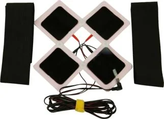

Частые вопросы
Болит поясница: что делатьПочему болит поясницаПоясница отдаёт в ногуЗаклинило поясницуБолит поясница у женщинБолит поясница у мужчинГрыжа поясничного отдела: как жить и двигатьсяПротрузия простыми словамиДвижение при грыже и протрузииБолит колено при сгибании и при ходьбеБолит плечо, больно поднять рукуБолят шея и плечи после работы за компьютеромСпина после 12 часов сидения
 Болит поясница: что делатьЧаще всего поясница болит из-за мышц: долго сидели, резко наклонились, подняли тяжёлое, замёрзли. Реже за боль…Почему болит поясницаЧастые причины: перегрузка и спазм мышц, долгое сидение, слабые мышцы корпуса, изменения в межпозвонковых диск…Поясница отдаёт в ногуКогда боль из поясницы стреляет в ягодицу или ногу, часто раздражён нервный корешок. Причиной бывает грыжа или…Заклинило поясницу«Заклинило» обычно значит резкий мышечный спазм: тело защищает спину и не даёт разогнуться. Это пугает, но чащ…Болит поясница у женщинУ женщин к обычным причинам (мышцы, сидение, диски) добавляются гинекологические и почечные. Боль в пояснице б…Болит поясница у мужчинУ мужчин поясница часто болит от нагрузки: работа на ногах, подъём тяжестей, спорт рывками. Или наоборот, от 1…Грыжа поясничного отдела: как жить и двигатьсяГрыжа - это выпячивание межпозвонкового диска. С ней живут многие, и чаще всего без операции. Тактику выбирает…Протрузия простыми словамиПротрузия - это когда межпозвонковый диск немного выпячивается, но его оболочка цела. Грыжа - следующая стадия…Движение при грыже и протрузииДвижение при грыже и протрузии нужно, но не любое. Подходящие упражнения подбирает врач ЛФК, а не видео из инт…
Болит поясница: что делатьЧаще всего поясница болит из-за мышц: долго сидели, резко наклонились, подняли тяжёлое, замёрзли. Реже за боль…Почему болит поясницаЧастые причины: перегрузка и спазм мышц, долгое сидение, слабые мышцы корпуса, изменения в межпозвонковых диск…Поясница отдаёт в ногуКогда боль из поясницы стреляет в ягодицу или ногу, часто раздражён нервный корешок. Причиной бывает грыжа или…Заклинило поясницу«Заклинило» обычно значит резкий мышечный спазм: тело защищает спину и не даёт разогнуться. Это пугает, но чащ…Болит поясница у женщинУ женщин к обычным причинам (мышцы, сидение, диски) добавляются гинекологические и почечные. Боль в пояснице б…Болит поясница у мужчинУ мужчин поясница часто болит от нагрузки: работа на ногах, подъём тяжестей, спорт рывками. Или наоборот, от 1…Грыжа поясничного отдела: как жить и двигатьсяГрыжа - это выпячивание межпозвонкового диска. С ней живут многие, и чаще всего без операции. Тактику выбирает…Протрузия простыми словамиПротрузия - это когда межпозвонковый диск немного выпячивается, но его оболочка цела. Грыжа - следующая стадия…Движение при грыже и протрузииДвижение при грыже и протрузии нужно, но не любое. Подходящие упражнения подбирает врач ЛФК, а не видео из инт…
Болит колено при сгибании и при ходьбеКолено болит по разным причинам: перегрузка, травма, воспаление, износ хряща. Если колено опухло, горячее или … Болит плечо, больно поднять рукуПлечо часто болит от перегрузки, долгой работы с поднятой рукой, а иногда боль приходит из шеи. Боль в левом п…
Болит плечо, больно поднять рукуПлечо часто болит от перегрузки, долгой работы с поднятой рукой, а иногда боль приходит из шеи. Боль в левом п… Болят шея и плечи после работы за компьютеромГолова весит несколько килограммов. Когда она весь день наклонена к экрану, мышцы шеи и плеч работают без отды…Спина после 12 часов сиденияМонтаж, руль, офис: 12 часов в одной позе - и к вечеру спина не разгибается. Это не слабость, а нагрузка, к ко…
Болят шея и плечи после работы за компьютеромГолова весит несколько килограммов. Когда она весь день наклонена к экрану, мышцы шеи и плеч работают без отды…Спина после 12 часов сиденияМонтаж, руль, офис: 12 часов в одной позе - и к вечеру спина не разгибается. Это не слабость, а нагрузка, к ко…С чем к нам обращаются
12 часов за монтажом или рулёмК вечеру спина не разгибается, утром всё сначала.
Грыжа или протрузия в заключенииОтдаёт в ногу, немеет, страшно наклониться.
Боль, к которой привыклиЖизнь подстроилась под неё: меньше выходить, меньше двигаться.